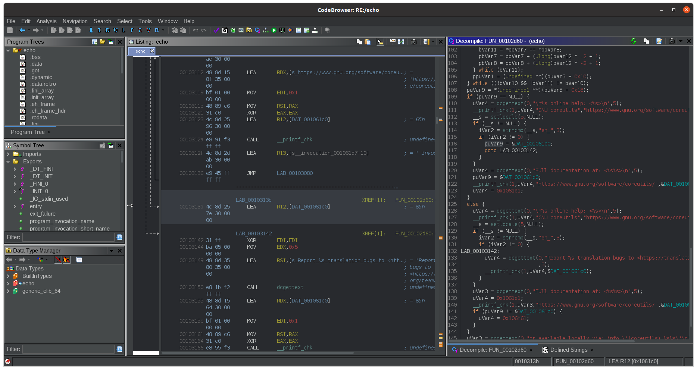
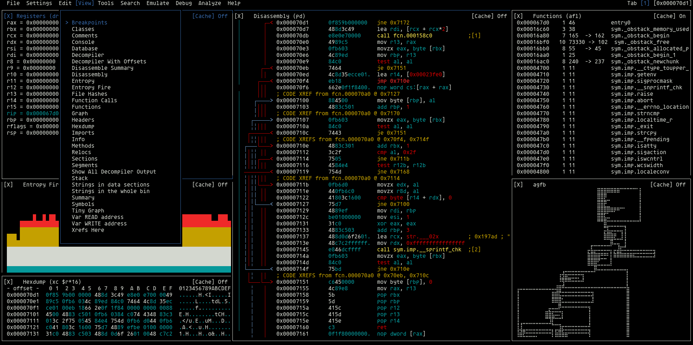
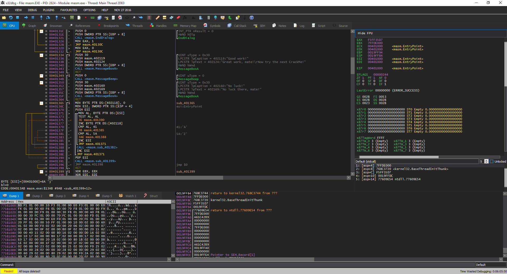

反汇编器
英文: Disassembler.
Info
由于许多反汇编器已经同时具备静态分析和动态调试功能, 因此这里反汇编器同时指代逆向工程框架.
IDA Pro

由于高昂的售价, 使得 IDA Pro 自身也变成了被逆向的对象.
- 提供了只包含部分功能的免费版本 IDA Free.
-
部分键位和大多数软件并不相同, 具体请参考快捷键.
-
重命名: 使用
n来对变量或函数名进行重命名. - 注释: 使用
;来对反汇编结果进行注释,/来对反编译结果进行注释. 遇到不熟悉的指令集时可以通过 选项->常规->反汇编->自动注释 来启用汇编代码作用的行内注释.
插件支持 Python 和 IDC 语言.
使用方法请参考手册(帮助->帮助, F1).
Apple Silicon M1
IDA Pro 的 ARM 版本暂时未泄露, 因此使用 Apple Silicon M1 的电脑需要借助 Wine 来运行 IDA Pro.
Ghidra

这是一个由 NSA 维护的项目, 因此即使是开源项目也需谨慎使用.
Dark Theme 需要另行安装.
Warning
该项目早期版本在未修复的已知的远程可执行漏洞 CVE-2021-44228, 详情请参考安全警告.
请根据手册来进行补丁.
插件仅支持 Java 语言.
使用方法请参考手册(Help->Contents).
Radare2

普通平台下的安装方法不同, 具体请参考安装方法.
使用方法请参考在线手册和Wiki.
快速入门
-
之后便进入 radar2 内部的命令行.
-
> aaa # 对全部函数进行分析 > afl # 列出全部函数 > afl~main # 查看包含特定关键字的函数 > s main # 定位到指定函数 > pdf # 输出反编译结果 > pdf @ main # 输出 main 函数的反编译结果 > pdc # 输出反编译结果其中
~类似| grep, 可在不同命令中使用. -
进入视觉模式后可以按
p进行切换, 按/V在 V 和 VV 模式之间切换, 按Shift+!进入视觉面板模式, 即可以同时启用多个窗口显示不同内容.
VV 模式下, 可以使用+/-进行缩放. -
调试
按键 描述 F2 设置断点 F7 单步步入 F8 单步步过 F9 执行
调试器
x64dbg

开源, 免费, 只支持 Windows. 详情请参考官网.
是 OllyDbg(于 2013 年停止维护)良好的替代品).
WinDbg
支持 Time Travel Debugging(TTD)1.
GDB
大部分 Linux 发行版自带 gdb, 若要调试其他架构的程序需要安装 gdb-multiarch.
在线试用.
快速入门
# 执行
r [args] # run, 执行程序
c # cotinue, 继续执行
s # step, 源码级单步步入
n # next, 源码级单步步过
si # step inst, 指令级单步步入
ni # next inst, 指令级单步步过
finish # 步出
until [n] # 执行到第 n 行
# 断点
b [file:][func|line] # break, 添加断点
delete [id] # 删除指定 id 的断点
disable [id] # 禁用指定 id 的断点
enable [id] # 启用指定 id 的断点
i b # info break, 列出断点信息
# 变量
i args # info args, 列出当前函数参数
i locals # info locals, 列出局部变量
p [var] # print, 输出变量 var 的值
# 其他
i r # info register, 列出寄存器信息
bt # backtrace, 输出调用栈
dis [func] # disassemble, 输出函数 func 的反汇编, func 缺省则输出前函数的
q # quit, 退出
插件
安装 pwndbg:
Warning
安装后需保留本地仓库.
安装 peda:
Warning
安装后需保留本地仓库.
安装 GEF:
GDB 与 LLDB
- 可以对代码进行反汇编, 但只是简单的输出反汇编代码. 可以搭配 Radare2 使用(LLDB 需要 r2lldb 插件), 同时具备调试和反汇编功能.
- 所使用的指令是不完全相同的, 请参考具体区别.
- GDB 支持的语言更多.
使用 intel 汇编语法:
QIRA
QIRA(QEMU Interactive Runtime Analyser) 是一款时间无关1的调试器.
常用命令
以下是在进行动态调试时常用的命令:
- 查看程序基本信息
- 查看程序依赖库
- 查看进程的调用栈
- 检测系统调用
常用参数:
-c: 按系统调用进行汇总, 包括耗时/时间占比/调用次数/失败次数等.-t: 在输出的系统调用信息记录前加上时间戳.-T: 在输出的系统调用信息记录后加上耗时.
还可以对记录按系统调用或类型进行过滤.
解释型语言
由于解释型语言并不直接生成可执行代码, 因此需要使用不同的工具进行分析. 通常脚本语言的解释器会将源码文件转换为字节码文件, 以提高解释的效率.
脚本语言的逆向较为简单, 因为字节码可以直接对应到源代码, 而且也保留了变量名称等信息便于输出异常信息.
Python
Python 的源码文件(.py)可以转换为字节码文件(.pyc), 或通过 py2exe/pyinstaller 等工具转换为不同平台的可执行文件.
识别
存在较多包含 Py 字眼的字符串.
反编译
- 利用 unpy2exe/pyinstxtractor 重新转换为字节码文件.
- 利用 uncompyle2 将字节码文件反编译为源码文件.
Java
识别
存在较多包含 java 字眼的字符串.
反编译
类似许多脚本打包软件, exe4j 的工作原理是先将 jar 文件写入到系统临时目录中, 然后再执行 jar 文件. 因此只需要从临时目录中找到相应的文件即可.
jar 文件是字节码文件(.class)的合集, 可以直接利用 jad/jd-gui/Fernflower 等工具进行反编译.
.NET
识别
这类文件具有明显的特征, 可以通过工具分析出来. 比如通过 IDA 加载的时候文件类型会出现 Microsoft.NET assembly 选项.
反编译
- .NET Reflector: .NET 反编译.
- de4dot: .NET 反混淆.